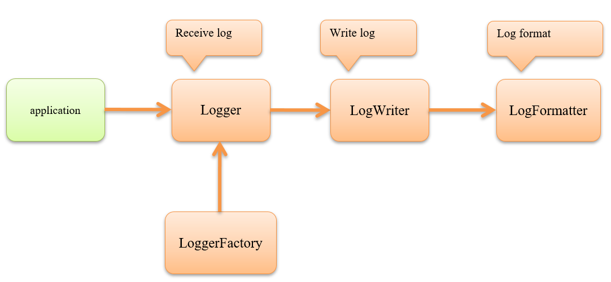

Log Output¶
Table of contents
Provides a function to output logs.
Function overview¶
Implementation of the log output function can be replaced¶
The log output is composed of three processes, and the implementation of each of which can be replaced.

Can be replaced with the LogWriter and LogFormatter units, and if these do not meet the requirements Logger / LoggerFactory can be implemented to replace almost all processes.
For example, if the use of open source log output library is preferred, replacing Logger / LoggerFactory is better.
Note that the logging framework with extensive operating experience in open source, is already equipped with a dedicated logger/logger factory.
For details, see log Adapter .
For comparison of features between this function and the frequently utilized log4j, see Functional comparison with log4j .
The default class provided by the log output function is shown.
- Logger/LoggerFactory
- LogWriter
- LogFormatter
- RotatePolicy
Important
If you want to use SynchronousFileLogWriter, see Notes on using the SynchronousFileLogWriter .
Tip
For the log level used in the log output function, see Log level definition .
Provides various log output functions in advance¶
This framework provides the output function of various logs commonly required by the applications.
The log format can be changed with configuration and used according to the application requirements.
As described in the Configure various logs, the output function of various logs is performing formatting only,
and this function is used for the output processing of the logs.
The blank project generated from the archetype provided by Nablarch has various log formats set.
See Default configuration list for more information.
| Log type | Description |
|---|---|
| Failure notification log | Outputs the information necessary to identify the person in charge of primary isolation during failure incidents. |
| Failure analysis log | Outputs information necessary to identify the cause of failure. |
| SQL log | Outputs the SQL statement execution time and SQL statement to be used for performance tuning of SQL statement execution that is likely to cause acute performance degradation. |
| Performance log | Outputs execution time and memory usage for performance tuning of an arbitrary process. |
| HTTP access log | Outputs the information to grasp the execution status of application in the web application. The log includes the output information required to measure the application performance and also for load measurement of the application. It is also used as a trace log that outputs all request and response information to detect unauthorized use of the application. |
| HTTP access log (for RESTful web service) | Outputs the information to grasp the execution status of application in the RESTful web service application. The log includes the output information required to measure the application performance and also for load measurement of the application. It is also used as a trace log that outputs all request and response information to detect unauthorized use of the application. |
| Messaging log | The log outputs information for grasping the status of message send and receive in the messaging process. |
Tip
In this framework, Failure notification log and Failure analysis log are collectively called failure log.
Module list¶
<dependency>
<groupId>com.nablarch.framework</groupId>
<artifactId>nablarch-core</artifactId>
</dependency>
<dependency>
<groupId>com.nablarch.framework</groupId>
<artifactId>nablarch-core-applog</artifactId>
</dependency>
<!-- Only when using SQL logs-->
<dependency>
<groupId>com.nablarch.framework</groupId>
<artifactId>nablarch-core-jdbc</artifactId>
</dependency>
<!-- Only when using HTTP access logs-->
<dependency>
<groupId>com.nablarch.framework</groupId>
<artifactId>nablarch-fw-web</artifactId>
</dependency>
<!-- Only when using HTTP access logs (for RESTful web service) -->
<dependency>
<groupId>com.nablarch.framework</groupId>
<artifactId>nablarch-fw-jaxrs</artifactId>
</dependency>
<!-- Only when using messaging logs -->
<dependency>
<groupId>com.nablarch.framework</groupId>
<artifactId>nablarch-fw-messaging</artifactId>
</dependency>
How to use¶
Output the log.¶
Use Logger to output logs Get Logger from LoggerManager .
// Get logger by specifying a class.
// Logger is stored in class variable.
private static final Logger LOGGER = LoggerManager.get(UserManager.class);
// Check the log output in advance and output the log.
if (LOGGER.isDebugEnabled()) {
String message = "userId[" + user.getId() + "],name[" + user.getName() + "]";
LOGGER.logDebug(message);
}
Specify the logger name in the acquisition of Logger . A string or class can be specified for the logger name. If a class is specified, FQCN of the specified class will be the logger name.
Important
At the level where the log is constantly being output in the application, advance check is not required as the readability of the source code is reduced. For example, it is not necessary to check in advance from the FATAL level to the INFO level if the log level output during production operation has to be changed to the INFO level.
Tip
Specify the logger name (SQL, MONITOR, etc.) indicating the usage if required to output logs for a specific purpose such as SQL log or monitoring log, and specify the FQCN of the class for other cases.
Configure log output¶
Configure the log output in the property file.
- Property file location
Use log.properties directly below the classpath. If the location is to be changed, specify the file path in the system property with nablarch.log.filePath as a key. See FileUtil#getResource how to specify file path.
>java -Dnablarch.log.filePath=classpath:nablarch/example/log.properties ...- Description rules of property files
The description rules of the property file are shown below.
- LoggerFactory
-
- Description rules
-
- loggerFactory.className
- Specify FQCN of the class that implements loggerFactory.className LoggerFactory. To use this function, specify BasicLoggerFactory .
- Example of the description
# LoggerFactory determines the implementation (this function, Log4J, etc.) used for log output. loggerFactory.className=nablarch.core.log.basic.BasicLoggerFactory
- LogWriter
-
- Description rules
-
- writerNames
- Specify the names of all LogWriters that use writerNames. Use comma as a delimiter if more than one is specified.
- writer. <name>.className
- Specify FQCN of the class that implemented LogWriter.
- writer. <name>.<property name>
- Specify the value to be set in the property for each LogWriter. Refer to Javadoc of the LogWriter used for the properties that can be specified.
- Example of the description
# Define 2 names. writerNames=appLog,stdout # Configure appLog. writer.appLog.className=nablarch.core.log.basic.FileLogWriter writer.appLog.filePath=/var/log/app/app.log # Configure stdout. writer.stdout.className=nablarch.core.log.basic.StandardOutputLogWriter
- Logger configuration
-
- Description rules
-
- availableLoggersNamesOrder
Specify the names of all Logger configurations that use availableLoggersNamesOrder. Use comma as a delimiter if more than one is specified.
Important
Note that the order of description in the availableLoggersNamesOrder property has a meaning.
The acquisition process Logger matches Logger in the order described here for the logger name specified by the class that performs log output and returns the first match Logger .
For example, if the description order of availableLoggersNamesOrder in the following description example is described as availableLoggersNamesOrder = root, sql, all logger acquisitions will end up matching the logger configuration
root. As a result, even if the log is output with the logger nameSQL, the log is not output tosqlLogbut is output to theappLogspecified in the logger configurationroot.Therefore, the availableLoggersNamesOrder property is described in sequence from the logger configuration that specifies a more restrictive regular expression.
Important
The names of the logger configuration specified in the availableLoggersNamesOrder and loggers.* are required to match. The match is checked in the initial process of BasicLoggerFactory , and an exception is thrown if they do not match. For example, if
accessis removed from availableLoggersNamesOrder in the above configuration, an exception will be thrown.This check is performed to avoid the occurrence of configuration omissions. If
accessis removed from avaialableLoggersNameOrder in the above configuration, it is necessary to explicitly remove the loggers.access.* configuration.- loggers.<name>.nameRegex
- loggers.<name>.nameRegex specifies the regular expression used to match the logger name. The regular expressions are used to narrow down the loggers that are the targets of logger configuration. Matched to logger name specified when acquiring the logger (that is, the logger name specified in the argument of LoggerManager#get).
- loggers.<name>.level
- Specify the name of loggers.<Name>.level LogLevel . All the logs that are above the level specified here will be output.
- loggers.<name>.writerNames
- loggers.<name>.writerNames specifies the name of the LogWriter, which is the output destination. Use comma as a delimiter if more than one is specified. Logs are written for all the LogWriters specified here.
- Example of the description
# Define the names of the two logger configurations. availableLoggersNamesOrder=sql,root # Set root. loggers.root.nameRegex=.* loggers.root.level=WARN loggers.root.writerNames=appLog #Set sql. loggers.sql.nameRegex=SQL loggers.sql.level=DEBUG loggers.sql.writerNames=sqlLog
- Description example of property files
A description example of the entire property file is shown below.
loggerFactory.className=nablarch.core.log.basic.BasicLoggerFactory writerNames=appLog,sqlLog,monitorLog,stdout # Example of configuring a log file for application writer.appLog.className=nablarch.core.log.basic.FileLogWriter writer.appLog.filePath=/var/log/app/app.log # Example of configuring a log file for SQL output writer.sqlLog.className=nablarch.core.log.basic.FileLogWriter writer.sqlLog.filePath=/var/log/app/sql.log # Example of configuring a log file for monitoring writer.monitorLog.className=nablarch.core.log.basic.FileLogWriter writer.monitorLog.filePath=/var/log/app/monitoring.log # Configuring example for standard output writer.stdout.className=nablarch.core.log.basic.StandardOutputLogWriter availableLoggersNamesOrder=sql,monitoring,access,validation,root # Example of configuring all logger names for log output # Output WARN level or higher to appLog for all logger acquisition. loggers.root.nameRegex=.* loggers.root.level=WARN loggers.root.writerNames=appLog # Example of configuring a specific logger name as a log output target. # For logger acquisition with "MONITOR" specified in logger name # Output ERROR level or higher to appLog, monitorLog. loggers.monitoring.nameRegex=MONITOR loggers.monitoring.level=ERROR loggers.monitoring.writerNames=appLog,monitorLog # Example of configuring a specific logger name as a log output target. # For logger acquisition with "SQL" specified in logger name # Output DEBUG level or higher to sqlLog. loggers.sql.nameRegex=SQL loggers.sql.level=DEBUG loggers.sql.writerNames=sqlLog # Example of configuring a specific class as a log output target. # For logger acquisition with "app.user.UserManager" specified in logger name # Output INFO level or higher to appLog and stdout. loggers.access.nameRegex=app\\.user\\.UserManager loggers.access.level=INFO loggers.access.writerNames=appLog,stdout # Configuration example for targeting specific packages and below for log output. # For logger acquisition in which the name starting from "nablarch.core.validation" is specified in logger name # output DEBUG level or higher to stdout. loggers.validation.nameRegex=nablarch\\.core\\.validation\\..* loggers.validation.level=DEBUG loggers.validation.writerNames=stdout
Tip
Preparing one logger configuration that matches all the log output and specifying the logger configuration at the end of availableLoggersNamesOrder is recommended. Outputs of important logs are prevented from being missed even if the configuration is omitted. Refer to the logger configuration
rootin the above description example for the configuration example.
Overwrite log output configuration¶
The log output configuration can be overwritten by using system property and specifying the value with the same key name as the property file. By this, it is possible to prepare a common property file and change the log output configuration for each process.
Below is an example of how to change the log level of logger configuration root to INFO.
>java -Dloggers.root.level=INFO ...
Specify the log format¶
This function provides BasicLogFormatter as LogFormatter that can be used for general purpose.
Placeholders are used to specify the format in BasicLogFormatter . For placeholders that can be used, see BasicLogFormatter.
A configuration example for format is shown below. Specify the format in the LogWriter property.
# When specifying the format, specify BasicLogFormatter explicitly.
writer.appLog.formatter.className=nablarch.core.log.basic.BasicLogFormatter
# Specify the format using the placeholder.
writer.appLog.formatter.format=$date$ -$logLevel$- $loggerName$ $message$
# Specify the pattern to be used for date and time format.
#If not specified, "yyyy-MM-ddHH:mm:ss.SSS" is used.
writer.appLog.formatter.datePattern=yyyy/MM/dd HH:mm:ss[SSS]
# Specify the log level text
# If not specified, the LogLevel enumeration type (FATAL, INFO, etc.) names will be used.
writer.appLog.formatter.label.fatal=F
writer.appLog.formatter.label.error=E
writer.appLog.formatter.label.warn=W
writer.appLog.formatter.label.info=I
writer.appLog.formatter.label.debug=D
writer.appLog.formatter.label.trace=T
The following items can be output in BasicLogFormatter to identify the status of the output log. Descriptions are provided for these output items.
- Boot process
The boot process is the name used to identify the execution environment in which the application was started. By using a name that combines the server name and identification string such as JOBID for the boot process, the execution environment of the log output from multiple processes of the same server can be specified. The boot process is assumed to define a system such as an ID system for each project.
The boot process is specified in the system property with the
nablarch.bootProcesskey. If the system property is not specified, the boot process will be blank.
- Processing architecture
Processing architecture refers to web, batch, etc. If the application process architecture is to be identified separately, it is specified and used for each project.
The process architecture is specified in the property file that was explained in Configure log output , with the key
nablarch.processingSystem. If the property is not specified, it will be blank.
- Execution ID
The execution ID is given with respect to the request ID to identify each execution of the application. Since the execution ID is issued based on the number of executions for one request ID, the relationship between request ID and run time ID is one to many.
When multiple logs are output, the execution ID is used to link the multiple logs that have been output.
The execution ID is issued at the timing of initializing : ThreadContext, and is configured in ThreadContext.
- ID system for Execution ID
# Added only when the boot process is specified. Boot process + system date and time (yyyyMMddHHmmssSSS) + serial number (4 digits)
Important
When the request ID, execution ID and user ID are output, Thread Context Variable Management Handler must be included in the handler configuration as they are acquired from ThreadContext. In particular, you need to set a value for the user ID in your application by referring to Setting a User ID.
- When line feed code and tab character are to be included
When line feed code and tab character are to be included in the format, use the same description as Java shown below.
Line feed code \n Tab character \t
The line feed code is obtained from
line.separatorincluded in the system property of standard Java. Therefore, the OS line feed code is used if theline.separatorin the system property is not changed.Tip
Strings
\nand\tcannot be output by BasicLogFormatter .
Configure various logs¶
The output function of each log only performs the format process according to the purpose of each log, and the process of log output uses this function. In other words, the message specified in Logger is created in the output function of various logs.
Therefore, to use the output function of various logs, configurations are required for various logs in addition to Configure log output . Configure various logs in the property file.
- Property file location
Use app-log.properties directly below the classpath. If the location is to be changed, specify the file path in the system property with nablarch.appLog.filePath as a key. See FileUtil#getResource how to specify file path.
>java -Dnablarch.appLog.filePath=file:/var/log/app/app-log.properties ...- Description rules of property files
Refer to the following, as the rules differs for each log.
Rotate log files¶
FileLogWiter provided by this function rotates log files according to the configured policy.
The default rotation policy is FileSizeRotatePolicy which rotates by file size. By creating an implementation class of RotatePolicy, you can change the rotation policy.
The implementation class of RotatePolicy provided by this function is as follows. See the Javadoc for each RotatePolicy setting.
An example of rotation policy setting is shown below. Rotation policy is specified in LogWriter property.
writerNames=sample # Specify the FQCN of the class that implements RotatePolicy in the rotatePolicy of the writer writer.sample.rotatePolicy=nablarch.core.log.basic.DateRotatePolicy # Update time. option. writer.sample.rotateTime=12:00
Expansion example¶
Add LogWriter¶
When adding a new LogWriter, create a class that implements the LogWriter interface. When creating a LogWriter that uses LogFormatter , create by providing common processing, inheriting LogWriterSupport.
Add LogFormatter¶
hen adding a new LogFormatter, create a class that implements the LogFormatter interface. To enable changing the text that indicates the log level in the configuration, use LogLevelLabelProvider .
Along with the addition of a new LogFormatter, there may be a need to increase parameters specified during log output, and receive the parameters increased by LogFormatter. To increase the parameters specified during log output in this function, object types with variable length argument options are provided in the log output method of Logger interface.
// Logger # logInfo method signature
public void logInfo(String message, Object... options)
public void logInfo(String message, Throwable cause, Object... options)
To increase the number of parameters for log output, specify and use the options argument.
Add log output items (placeholders)¶
BasicLogFormatter uses the LogItem interface to get all the output items corresponding to each placeholder. Therefore, if a new placeholder is to be added, create the following classes.
- Create a class that implements LogItem .
- Create a class that inherits BasicLogFormatter and add a placeholder.
An example of change to acquire the boot process from the LogFormatter configuration is shown. The configuration of LogFormatter assumes the following.
# Specifies a custom LogFormatter.
writer.appLog.formatter.className=nablarch.core.log.basic.CustomLogFormatter
# Specify the format
writer.appLog.formatter.format=$date$ -$logLevel$- $loggerName$ [$bootProcess$] $message$
# Specifies the boot process in the LogFormatter configuration.
# Outputs the boot process specified here to $bootProcess$.
writer.appLog.formatter.bootProcess=CUSTOM_PROCESS
- Create a class that implements LogItem .
// Class to get a custom boot process. public class CustomBootProcessItem implements LogItem<LogContext> { private String bootProcess; public CustomBootProcessItem(ObjectSettings settings) { // Get the boot process from LogFormatter configuration. bootProcess = settings.getProp("bootProcess"); } @Override public String get(LogContext context) { // Return the boot process obtained from the configuration. return bootProcess; } }
- Create a class that inherits BasicLogFormatter and add a placeholder
public class CustomLogFormatter extends BasicLogFormatter { // Override the method to get the log output items to be formatted. @Override protected Map<String, LogItem<LogContext>> getLogItems(ObjectSettings settings) { // Overwrite the placeholder of the boot process. Map<String, LogItem<LogContext>> logItems = super.getLogItems(settings); logItems.put("$bootProcess$", new CustomBootProcessItem(settings)); return logItems; } }
Do not output the log initialization message¶
An initialization message is output by this function to the log when each logger is initialized. If the initialization message is not required for the monitored log, etc, then support by creating a Writer that does not output the initialization message based on the Writer provided by this function.
If the log Adapter is used for the purpose of unifying the logger with the web application server or OSS product, this support is not necessary as initialization messages are not output.
The corresponding example shown below.
Import (copy) the source code of the Writer class that will be the base to the project. For example, when the log is output to a the file, copy FileLogWriter .
Delete the part that outputs the initialization log.
In the case of FileLogWriter , delete the part that outputs the initialization message as shown in the modification example given below.
private void initializeWriter() { try { out = new BufferedOutputStream(new FileOutputStream(filePath, true), outputBufferSize); currentFileSize = new File(filePath).length(); // Delete the output process of the initialization message that was performed here } catch (IOException e) { throw new IllegalArgumentException(String.format("failed to create %s. file name = [%s], encoding = [%s], buffer size =[%s]", Writer.class.getName(), filePath, charset.displayName(), outputBufferSize), e); } }
Change such that the initialization message after the log function initialization is not output.
Override needsToWrite , and change such that the initialization message that is called the first time is not output.
/** Define the flag for initial determination */ private boolean suppressionWriting = true; @Override public boolean needsToWrite(final LogContext context) { final String message = context.getMessage(); if (suppressionWriting) { // Since it is an initialization message if the log to be output starts from "initialized.", // "false" is returned indicating that it is not the output target. if (StringUtil.hasValue(message) && message.startsWith("initialized.")) { suppressionWriting = false; return false; } } return super.needsToWrite(context); }
- Configure the created class in log.properties.
Configure the class name of the writer created in the project side, in log.properties.
The configuration example shown below.
writerNames=sample # Configure the class created in the class name of the writer # Configuration example when the fully qualified class name is "sample.CustomFileLogWriter" writer.sample.className = sample.CustomFileLogWriter
Output as a structured log in JSON format¶
By replacing LogWriter and the formatter used in various logs with a class for JSON output, log output can be made in JSON format.
Specifically, the log can be made into JSON format by making the following modifications.
- Change the formatter used in LogWriter to JsonLogFormatter
- Replace the formatter used in various logs with one for JSON logs
- Set the log output by Nablarch batch to JSON format
Change the formatter used in LogWriter to JsonLogFormatter¶
By changing the formatter used in LogWriter to JsonLogFormatter the log output can be in JSON format.
- How to use
An example of JsonLogFormatter configuration is shown below.
# To output logs in JSON format, specify JsonLogFormatter. writer.appLog.formatter.className=nablarch.core.log.basic.JsonLogFormatter # Specifies the output items. writer.appLog.formatter.targets=date,logLevel,message,information,stackTrace # Specifies the pattern used to format the date and time. # If not specified, it will be "yyyy-MM-dd HH:mm:ss.SSS". writer.appLog.formatter.datePattern=yyyy-MM-dd'T'HH:mm:ss.SSS'Z'
In JsonLogFormatter, the
targetsproperty specifies the output items separated by commas. The available output items are as follows. By default, all items are output.Output items that can be specified with the targets property¶ Output items Description date The date and time at which this log output was requested. logLevel Log level for this log output. loggerName The name of the logger configuration to which this log output corresponds. runtimeLoggerName The name specified for obtaining the logger from LoggerManager at runtime. bootProcess A name that identifies the boot process. processingSystem A name that identifies the processing architecture. requestId Request ID at the time this log output was requested. executionId The execution ID at the time this log output was requested. userId User ID of the logged-in user at the time this log output is requested. message Messages in this log output. stackTrace Stack trace of the exception object specified in the error information. payload The object specified in the option information. Tip
The
datePatternandlabel(log-level label) work the same way as BasicLogFormatter.- Example of the description
// Get logger by specifying a class. // Logger is stored in class variable. private static final Logger LOGGER = LoggerManager.get(UserManager.class);
LOGGER.logInfo("hello");
(Output result)
{"date":"2021-02-04 12:34:56.789","logLevel":"INFO","message":"hello"}
- Add your own items
When
payloadis included in the output target, the Map<String, Object> object specified in the option information is output as a JSON object. The rules for converting objects are as follows.Outputable objects¶ Java classes that can be output Output by JSON String Output as a JSON string. Number and its subclasses
（ Integer , Long , Short , Byte , Float , Double , BigDecimal , BigInteger , AtomicInteger , AtomicLong ）Outputs the return value of the toString()method as a JSON number. NaN and infinity are output as JSON strings.Boolean Output as JSON truth value ( true/false).Date
Calendar and its subclasses
LocalDateTimeOutput as a JSON string. The default format is "yyyy-MM-dd HH:mm:ss.SSS". To change the format, specify it with thedatePatternproperty.Implementation class for Map. Output as a JSON object. If the key is not a String, or if the value is null, the output will not include the key. If you want to outputnullas the value, set the propertyignoreNullValueMembertofalse.Implementation class for List. And arrays. Output as an array of JSON. nullOutput as nullin JSON. If the value of Map isnull, it is excluded from the output by default.Other objects Outputs the return value of the toString()method as a JSON string.- Example of the description
Map<String, Object> structuredArgs = new HashTable<String, Object>(); structuredArgs.put("key1", "value1"); structuredArgs.put("key2", 123); structuredArgs.put("key3", true); structuredArgs.put("key4", null); structuredArgs.put("key5", new Date()); LOGGER.logInfo("addition fields", structuredArgs);
(Output result)
{"date":"2021-02-04 12:34:56.789","logLevel":"INFO","message":"addition fields","key1":"value1","key2":123,"key3":true,"key5":"2021-02-04 12:34:56.789"}
Tip
When using JsonLogFormatter, do not set option information other than Map < String, Object >. You can specify multiple Map objects, but if the keys overlap, only one is output and the others are ignored.
Replace the formatter used in various logs with one for JSON logs¶
The various logs are formatted in a separate way for the message part. By replacing the formatter used for each format with a formatter for JSON, the contents output by the various logs can also be output as JSON logs.
For the specific settings of each formatter, refer to the each links in the table below.
JSON version formatter for various logs¶ Log type Supported formatters Failure log FailureJsonLogFormatter SQL log SqlJsonLogFormatter Performance log PerformanceJsonLogFormatter HTTP access log HttpAccessJsonLogFormatter HTTP access log (for RESTful web service) JaxRsAccessJsonLogFormatter Messaging log MessagingJsonLogFormatter
Set the log output by Nablarch batch to JSON format¶
To make the log output by Nablarch batch in JSON format, you need to make the following modifications in addition to the formatter settings described above.
- Switch ApplicationSettingLogFormatter for JSON.
- Switch LauncherLogFormatter for JSON
- Switch CommitLogger for JSON
Each of these settings is explained below.
Switch ApplicationSettingLogFormatter for JSON.¶
The ApplicationSettingLogFormatter is used to output system setting values to the log. To output this in JSON format, switch the formatter to ApplicationSettingJsonLogFormatter. You can configure in the property file described in Configure various logs.
- Description rules
The properties to be specified when using ApplicationSettingJsonLogFormatter are as follows.
- applicationSettingLogFormatter.className
required - To output logs in JSON format, specify ApplicationSettingJsonLogFormatter.
- applicationSettingLogFormatter.appSettingTargets
Items to be output in the application settings log (without business date). Separated by comma.
- Output items that can be specified and default output items
system setting value: systemSettings defaultbusiness date: businessDate
- applicationSettingLogFormatter.appSettingWithDateTargets
Items to be output in the application settings log (with business date). Separated by comma.
- Output items that can be specified
system setting value: systemSettings business date: businessDate
All items are output in default.
- applicationSettingLogFormatter.systemSettingItems
- List of names of system setting values to be output. Separated by commas. The default is empty, so it will not output anything.
- applicationSettingLogFormatter.structuredMessagePrefix
- A marker string given at the beginning of a message to identify that the message string after formatting has been formatted into JSON format.
If this marker is present at the beginning of the message, JsonLogFormatter processes the message as JSON data.
The default is
"$JSON$".
- applicationSettingLogFormatter.className
- Example of the description
applicationSettingLogFormatter.className=nablarch.core.log.app.ApplicationSettingJsonLogFormatter applicationSettingLogFormatter.structuredMessagePrefix=$JSON$ applicationSettingLogFormatter.appSettingTargets=systemSettings applicationSettingLogFormatter.appSettingWithDateTargets=systemSettings,businessDate applicationSettingLogFormatter.systemSettingItems=dbUser,dbUrl,threadCount
Switch LauncherLogFormatter for JSON¶
LauncherLogFormatter is used to output the start and end log of the batch. To output this in JSON format, switch the formatter to LauncherJsonLogFormatter. You can configure in the property file described in Configure various logs.
- Description rules
The properties to be specified when using LauncherJsonLogFormatter are as follows.
- launcherLogFormatter.className
required - To output logs in JSON format, specify LauncherJsonLogFormatter.
- launcherLogFormatter.startTargets
Items to be output to the start log of the batch. Separated by commas.
- Output items that can be specified
Start or end label: label Command line options: commandLineOptions Command line arguments: commandLineArguments
All items are output in default.
- launcherLogFormatter.endTargets
Items to be output to the end log of the batch. Separated by commas.
- Output items that can be specified
Start or end label: label Exit code: exitCode Execution time: executeTime
All items are output in default.
- launcherLogFormatter.startLogMsgLabel
- The value to output in the start log label. Default is
"BATCH BEGIN". - launcherLogFormatter.endLogMsgLabel
- The value to output in the end log label. Default is
"BATCH END". - launcherLogFormatter.structuredMessagePrefix
- A marker string given at the beginning of a message to identify that the message string after formatting has been formatted into JSON format.
If this marker is present at the beginning of the message, JsonLogFormatter processes the message as JSON data.
The default is
"$JSON$".
- launcherLogFormatter.className
- Example of the description
launcherLogFormatter.className=nablarch.fw.launcher.logging.LauncherJsonLogFormatter launcherLogFormatter.structuredMessagePrefix=$JSON$ launcherLogFormatter.startTargets=label,commandLineOptions,commandLineArguments launcherLogFormatter.endTargets=label,exitCode,executionTime launcherLogFormatter.startLogMsgLabel=BATCH BEGIN launcherLogFormatter.endLogMsgLabel=BATCH END
Switch CommitLogger for JSON¶
The CommitLogger is used to output the number of commits to the log. By default, the BasicCommitLogger is used.
To output this in JSON format, define JsonCommitLogger as a component. An example of a component definition is shown below.
- Example of a component definition
<component name="commitLogger" class="nablarch.core.log.app.JsonCommitLogger"> <property name="interval" value="${nablarch.commitLogger.interval}" /> </component>
The component name needs to be defined in commitLogger.
Notes on using the SynchronousFileLogWriter¶
Important
Although SynchronousFileLogWriter is designed for writing from multiple processes, it is assumed to be used only for low frequency log output such as Failure notification log. If SynchronousFileLogWriter is used for frequent log output, it may cause performance degradation due to waiting for lock acquisition or log loss due to conflict, so do not use SynchronousFileLogWriter for frequent log output such as application log or access log.
In addition, SynchronousFileLogWriter has the following restrictions, so consider carefully before using it.
As SynchronousFileLogWriter has the following restrictions, use after sufficient consideration.
- Cannot rotate logs.
- Log contents that are output may not be normal.
SynchronousFileLogWriter writes the log to the file while performing exclusive control using the lock file. If the lock cannot be acquired even if the lock acquisition wait time is exceeded, the lock file is force deleted, and a lock file is generated for own thread use and the log output is generated.
If the lock file cannot be force deleted, outputs the log forcibly while the lock is still not acquired. Also, if the lock file generation fails or even if an interruption occurs while waiting for lock acquisition, force outputs the log when the lock is still not acquired.
Note that when the log is forcibly output without acquiring the lock, the log may not output normally if there is a conflict between logs output from multiple processes.
If such failures occur, the error log will be output to the same log file along with the forced output log. Although the log prepared by this framework is output by default, by configuring the failure code in the property of SynchronousFileLogWriter, the log can be output in the failure notification log format (includes the failure code). Configuring the failure code is recommended, as it is possible to monitor the log in the same way as the normal failure notification log, with output in the format for failure notification log.
The property names that configure the failure code are shown below.
- failureCodeCreateLockFile
Details of the failure: Cannot generate the lock file Log level: FATAL Message configuration example (lock file path is set in {0}): Failed to generate the lock file. The lock file path may be wrong.Lock file path = [{0}]. Default log output (failure code etc, are not output): failed to create lock file. perhaps lock file path was invalid. lock file path=[{0}]. - failureCodeReleaseLockFile
Details of the failure: The generated lock file cannot be released (deleted) Log level: FATAL Message configuration example (lock file path is set in {0}): Failed to delete the lock file. Lock file path = [{0}]. Default log output (failure code etc, are not output): failed to delete lock file. lock file path=[{0}]. - failureCodeForceDeleteLockFile
Details of the failure: Unable to force delete the lock files that are not released Log level: FATAL Message configuration example (lock file path is set in {0}): Force delete of the lock file failed. The lock file has been opened incorrectly.Lock file path = [{0}]. Default log output (failure code etc, are not output): failed to delete lock file forcedly. lock file was opened illegally. lock file path=[{0}]. - failureCodeInterruptLockWait
Details of the failure: Interruption occurs when the thread is sleeping waiting for lock acquisition. Log level: FATAL Configuration example of message: An interruption occurred when acquiring the lock. Default log output (failure code etc, are not output): Interrupted while waiting for lock retry.
Important
Note that, although the log is output to the same log file in the failure notification log format if a failure code has been configured, the failure analysis log will not be output.
A configuration example of SynchronousFileLogWriter is shown below.
writerNames=monitorLog
# Specifies the SynchronousFileLogWriter class
writer.monitorLog.className=nablarch.core.log.basic.SynchronousFileLogWriter
# Specifies the write destination file path.
writer.monitorLog.filePath=/var/log/app/monitor.log
# Specifies the character encoding to be used when writing.
writer.monitorLog.encoding=UTF-8
# Specifies the size of the output buffer.(Unit is kilobytes.Calculate 1000 bytes as 1 kilobyte. 8KB if not specified )
writer.monitorLog.outputBufferSize=8
# Specifies the class name of log formatter.
writer.monitorLog.formatter.className=nablarch.core.log.basic.BasicLogFormatter
# Specifies the name of the LogLevel enumeration type. All the logs that are above the level specified here will be output.
writer.monitorLog.level=ERROR
# Specifies the file name of the lock file.
writer.monitorLog.lockFilePath=/var/log/lock/monitor.lock
# Specifies the lock acquisition retrial interval (milliseconds)
writer.monitorLog.lockRetryInterval=10
# Specifies the wait time (milliseconds) to acquire the lock.
writer.monitorLog.lockWaitTime=3000
# Specifies the failure notification code when lock file cannot be generated.
writer.monitorLog.failureCodeCreateLockFile=MSG00101
# Specifies the failure notification code when the generated lock file cannot be released (deleted)
writer.monitorLog.failureCodeReleaseLockFile=MSG00102
# Specifies the failure notification code when the unreleased lock file cannot be forcibly deleted.
writer.monitorLog.failureCodeForceDeleteLockFile=MSG00103
# Specifies the failure notification code when an interruption occurs while the thread is sleeping waiting for the lock.
writer.monitorLog.failureCodeInterruptLockWait=MSG00104
Important
Do not specify the maxFileSize property because log rotation may occur and log may not be output.
How to use LogPublisher¶
LogPublisher provides a function to send the output log information (LogContext) to the registered LogListener. This function is useful to process the output log programmatically.
At first, define LogPublisher as LogWriter.
# ...
# Add the writer of LogPublisher to writerNames
writerNames=monitorFile,appFile,stdout,logPublisher
# Define the logPublisher
writer.logPublisher.className=nablarch.core.log.basic.LogPublisher
writer.logPublisher.formatter.className=nablarch.core.log.basic.BasicLogFormatter
# ...
# Add the writer of LogPublisher to the writerNames of the logger that you want to process the log information.
# ROO
loggers.ROO.nameRegex=.*
loggers.ROO.level=INFO
loggers.ROO.writerNames=appFile,stdout,logPublisher
# MON
loggers.MON.nameRegex=MONITOR
loggers.MON.level=ERROR
loggers.MON.writerNames=monitorFile,logPublisher
# ...
Next, create an implementation class of LogListener to register with LogWriter.
package example.micrometer.log;
import nablarch.core.log.basic.LogContext;
import nablarch.core.log.basic.LogListener;
public class CustomLogListener implements LogListener {
@Override
public void onWritten(LogContext context) {
// Implementing a process using LogContext.
}
}
Finally, register the instance of LogListener to LogPublisher.
You can register LogListener with the static method of LogPublisher.
LogListener listener = new CustomLogListener();
LogPublisher.addListener(listener);
Now the LogPublisher can send the output log information to the CustomLogListener.
You can remove the LogListener from the LogPublisher with removeListener(LogListener) or removeAllListeners().
Log level definition¶
This function uses the following log levels.
| Log level | Description |
|---|---|
| FATAL | Indicates that a serious problem has occurred that makes it impossible for the application to continue. Monitoring is required and prompt notification and immediate response are necessary. |
| ERROR | Indicates that a problem has occurred that interferes with the continuation of the application. Although monitoring is required, notification and response are not as urgent as the FATAL level. |
| WARN | Though there is no immediate impact, it indicates that the event if not addressed could cause a problem that may interfere with the continuation of the application. The event should be monitored if possible, but it is not as urgent as the ERROR level. |
| INFO | Log level that outputs the application information during the production operation. Applicable to access and statistics logs. |
| DEBUG | Log level to output debug information during development. Applicable to SQL and performance logs. |
| TRACE | Log level to be used when a more detailed information output is required over debug information during development. |
The log consists of 6 levels, and decrease from FATAL to TRACE. The log output function outputs all logs of a level or higher, as specified by the setting. For example, when WARN level is specified in the configuration, only the logs specified with the FATAL level, ERROR level and WARN level are output.
Tip
During production operation, logs are assumed to be output at the INFO level. Specify the log output contents of each project so that the log file size does not become big.
Tip
Even this framework outputs log using the log output function. For the log output by the framework, see Framework log output policy .
Framework log output policy¶
The framework outputs logs based on the below output policy.
| Log level | Output policy |
|---|---|
| FATAL/ERROR | Outputs at the FATAL/ERROR level when the failure log is output. Since the failure log is the target of failure monitoring, it is the starting point for primary isolation during failure, and the policy is to output one failure log for each failure. Therefore, the policy is to output an failure notification log from the runtime platform with a single handler (handler that processes exceptions). |
| WARN | When the exceptions are linked when an error occurs, exceptions that cannot be output as failure logs are output at WARN level. For example, if an exception occurs in both the business process and end process of transaction, the business process exception is output to the failure log, and the end process exception of transaction is output at the WARN level. |
| INFO | When an error related to the application execution status is detected, output is at INFO level. For example, for errors of tampering URL parameters or permission check errors, output is at INFO level. |
| DEBUG | Outputs debug information used during application development. During application development, the information required for development is considered to be output by configuring at the DEBUG level. |
| TRACE | Outputs the debug information for use during framework development. Not intended for use in application development. |
Functional comparison with log4j¶
Function comparison between Nablrach and log4j (external site) are shown below.
| Function | Nablarch | log4j |
|---|---|---|
| Whether to output logs can be controlled at the log level | A
To the manual |
A |
| Whether to output the log can be controlled by category (package unit, name, etc.) | A
To the manual |
A |
| One log can be output to multiple output destinations | A
To the manual |
A |
| Log can be output to standard output | A
To the manual |
A |
| Log can be output to a file | A
To the manual |
A |
| Log files can be rotated by file size | B [1]
To the manual |
A |
| Log files can be rotated by date and time | B [1]
To the manual |
A |
| Log can be sent by email | C [2] | A |
| Logs can be sent by Telnet | C [2] | A |
| Log can be sent by Syslog | C [2] | A |
| Logs can be added to the Windows NT event log | C [2] | A |
| Can output logs to the database | C [2] | A |
| Log can be output asynchronously | C [2] | A |
| Log format can be specified with a pattern string | A
To the manual |
A |
| Can output failure log | A
To the manual |
D |
| Can output HTTP access log | A
To the manual |
D |
| Can output SQL log | A
To the manual |
D |
| Can output performance log | A
To the manual |
D |
| Can output messaging log | A
To the manual |
D |
| [1] | (1, 2) Nablarch log output does not provide file generation management, so it is partially provided. |
| [2] | (1, 2, 3, 4, 5, 6) Use log Adapter . Or create it in the project. For the creation method, see Add LogWriter . |